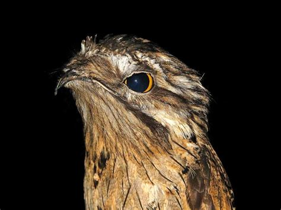

The Guajojo is a bird of nocturnal habits, common in the forests of Northeastern and Eastern Bolivia. According to the tale, it is the incarnation of a pretty native girl whose father, a cacique and powerful shaman, had forbidden her to see again the man of her choice. Finding out that she had disobeyed, the shaman decided to get rid of the young man, so he took him to the forest and murdered him.
Time passed, and the girl began to suspect something, went to the forest, found evidence of the killing and confronted her father, threatening to tell the whole tribe how he had killed her beloved. To prevent her from giving him away, the shaman turned her into a bird, so she could not speak out, but her voice was trapped in the bird’s throat. This is why the Guajojo has such a heart-breaking birdsong.